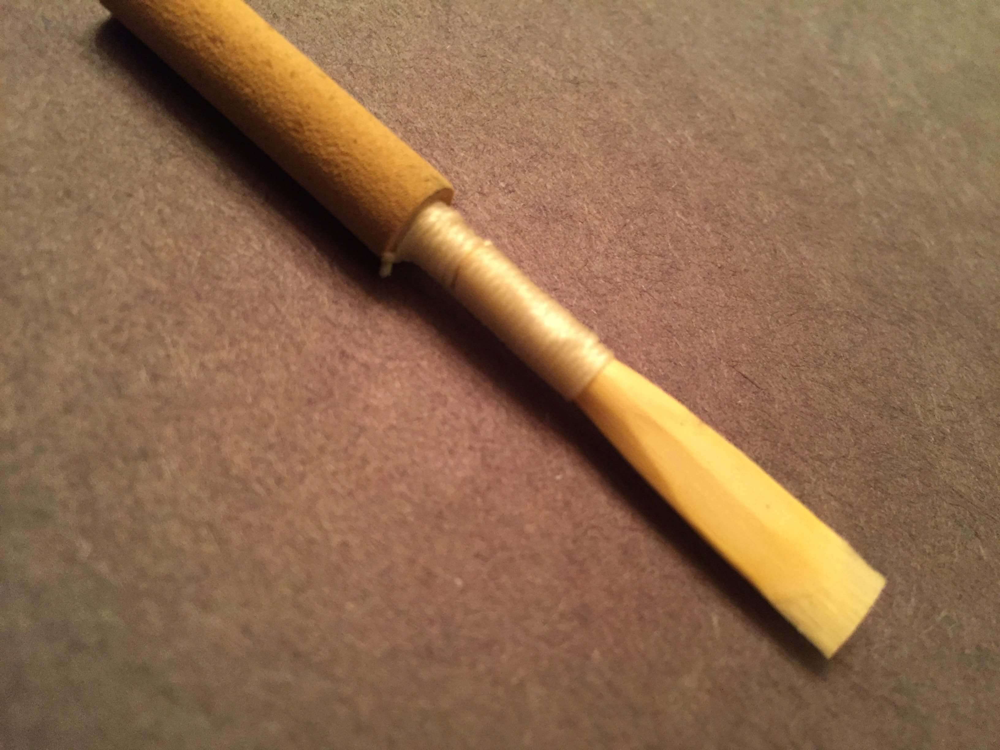

Making an oboe reed is complicated process that consists of many different steps, plenty of time, and expensive equipment. On this page, I have laid out the general process of making an oboe reed:
The preprocessing process consists of acquiring the cane and preparing it before it is further processed to be made into a reed. First, the oboist must acquire cane in tubes that is grown in France. The specific species that is used by woodwind instrument reeds (including clarinet, saxophone, oboe, and bassoon) is called Arundo donax. When cane arrives in tubes, it must be examined for quality. Cane quality is the most effective predictor of final reed quality.
The following qualities alert an oboist to cane that should be thrown away. Usually about 40% of the cane bought will be discarded.
After the cane has been analyzed, pieces that measure one third of the circumference must be cut lengthwise from the tubes with a razor blade or special tube. Following this step, the pieces must be guillotined to the correct length and pregouged using a special tool that levels the edges of the cane. This prepares the piece of cane to be gouged.
The first step in processing the cane that has been pregouged is gouging the cane. Gouging involved molding the inside of each piece of cane so that they are a very specific thickness in the center, symmetrically decreasing in thickness while moving toward the sides of the piece. Gouging is done by a gouging machine. Some popular gouging machine brands include Innoledy, Graff, and Ferrillo. Gouging machines are very expensive! Some gouging machines work best with soaked cane, and others work best dry. If the cane must be moist, then it should be soaked in hot or warm water for about fifteen minutes before it is ready to be gouged.
After the cane has been gouged, it is ready to be shaped. Shaping is the process of turning the semirectangular piece of cane that has just been gouged into the shape of something that can be tied on (in the next part of the process). It is done with a tool aptly named the shaper. There are many different shapes for oboe reeds, and they all have their advantages and disadvantages!
To tie a piece of cane on, an oboist needs a tube (otherwise known as a staple). This is a piece of cork that is attached to a conical metal tube that actually is placed into the oboe. An oboist also needs some thread (nylon or silk) and measuring tools. The piece of cane (which has been shaped) is tied around the metal part of the tube with great care to a specific set of measurements. If great care is not taken, the cane may not seal around the edges, which inhibits vibrations!
After the cane has been tied on, it is ready to be scraped. This is a very precise activity, and many oboists believe that it can never be completely mastered. It involves sharp knives, an extreme level of attention to detail, and a little bit of luck! Eventually the reed looks something like this:
